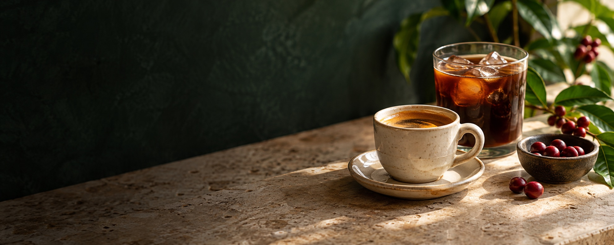

Ristretto Espresso
18g ground coffee, 18–27g espresso
How to make it
Pull a short espresso shot from 18g of finely ground coffee. Stop at 18–27g in the cup.

Teaberry Cafe
Coffee, tea, iced drinks, and something sweet.
Sample recipes for one serving. Adjust sweetness to taste.
These are approximate cup volumes and machine preset espresso outputs from the supplied guide.
The same sizes apply to Classic / Rich and Over Ice / Cold Brew. Fill the cup with ice before brewing over ice.
| Cup size | Approx. volume |
|---|---|
| 6 oz | 177 ml |
| 8 oz | 237 ml |
| 10 oz | 296 ml |
| 12 oz | 355 ml |
| 14 oz | 414 ml |
| 16 oz | 473 ml |
| 18 oz | 532 ml |
Ground coffee dose and approximate output volume.
| Preset | Dose | Output |
|---|---|---|
| Single espresso | 9 g | 0.8 oz / 24 ml |
| Double espresso | 18 g | 1.6 oz / 47 ml |
| Double cold-pressed | 18 g | 1.6 oz / 47 ml |
| Quad espresso | 40 g | 3.5 oz / 104 ml |
| Quad cold-pressed | 40 g | 3.5 oz / 104 ml |
Preset volumes are machine settings. The recipes above give espresso yield by weight, which is a different measure. Adjust output for your coffee and taste.